library(vegan)
data(varespec)10 Last assignment
multivariate-analysis
pca
nmds
ordination
vegan
It has been fun making these assignments, less fun having to grade them! This is the last assignment in the sequence, and it is a relatively short one 😄
We will be working with some biological-community data, and will be doing a PCA and an NMDS.
First step, download the vegan package and load the varespec data. The dataset we will be using is included in the vegan package.
Finally, use the help command (or ?) to read about the dataset:
Check the help file for varespec:
?varespec
ImportantAssignment question 1
Shortly describe the dataset. What are the rows? What are the columns?
Please note that the rows have names. This might be a bit confusing, but these names are numbers (and they are not sorted!) When we run a pca or an nmds, these “names” will be used.
10.1 Let’s plot the data
ImportantAssignment question 2
Look at the following plot and try to replicate it:
Some tips. I recommend you read the box under the plot before you start to plot this!
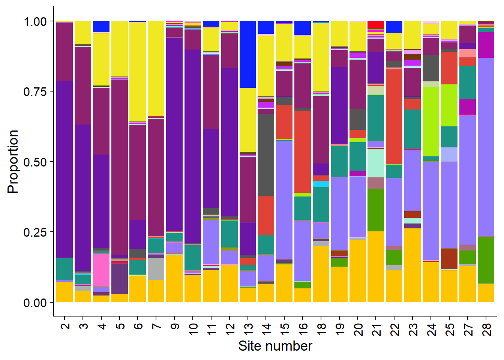
TipNeed help?
- The original dataset had row names. Look at the row names, they are number, but are not in order! These are the site names (we oftentimes give sites a number). We need to keep these names, but it would be probably best to have them as an extra column, rather than a name. Function
row.names()allows you to obtain the names of a row. - We have 44 species! That is a lot! You have to come up with a color palette that will allow you to distinguish different groups.
- A legend for the species is not necessary, we just want to see what sites are more similar to each other.
- The original data is in
wideformat.pivot_longerfrom thetidyrpackage can help you transform it to a long format - Check https://r-graph-gallery.com/48-grouped-barplot-with-ggplot2.html if you need help plotting this!
10.1.1 PCA
There are many ways to run PCA’s in R, as well as many packages. The good news is that it is super easy!
In this case we will run a PCA using vegan
vare.pca <- rda(varespec)
vare.pca
Call: rda(X = varespec)
Inertia Rank
Total 1826
Unconstrained 1826 23
Inertia is variance
Eigenvalues for unconstrained axes:
PC1 PC2 PC3 PC4 PC5 PC6 PC7 PC8
983.0 464.3 132.3 73.9 48.4 37.0 25.7 19.7
(Showing 8 of 23 unconstrained eigenvalues)That’s it! We ran our first PCA.
TipShould I scale the data?
You probably have seen in examples that often times people will add scale=T to the dataset. This is necessary when your data is in different scales. For example, in environmental variables temperature, humidity, cover, etc are measured in very different scales, so, using scale=T transforms the data and looks at z-scores or standard deviations rather than true values.
In this case, it doesn’t change results dramatically. You could run it like
vare.pca.scale <- rda(varespec, scale=T)
vare.pca.scale
Call: rda(X = varespec, scale = T)
Inertia Rank
Total 44
Unconstrained 44 23
Inertia is correlations
Eigenvalues for unconstrained axes:
PC1 PC2 PC3 PC4 PC5 PC6 PC7 PC8
8.898 4.756 4.264 3.732 2.964 2.884 2.727 2.180
(Showing 8 of 23 unconstrained eigenvalues)We can plot the screeplot (plot that shows each eigenvalue, which represent the variance explained) pretty easily using the following:
screeplot(vare.pca, type="lines")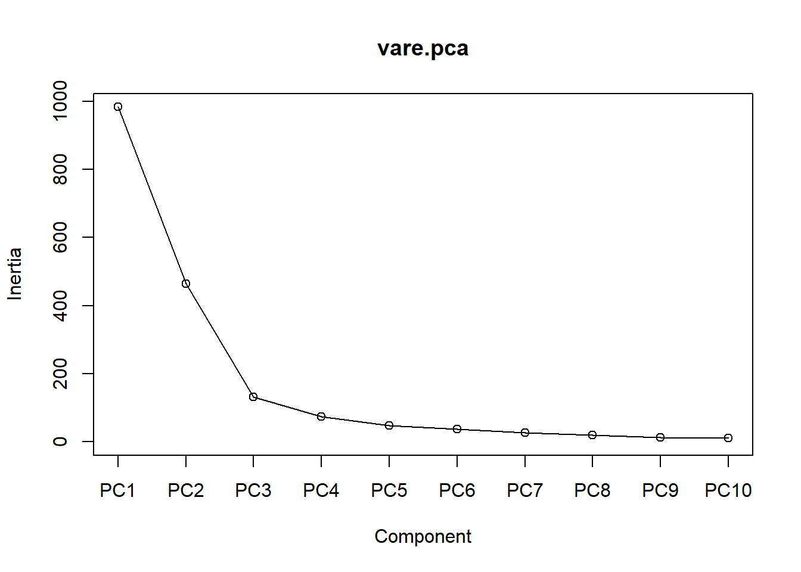
screeplot(vare.pca)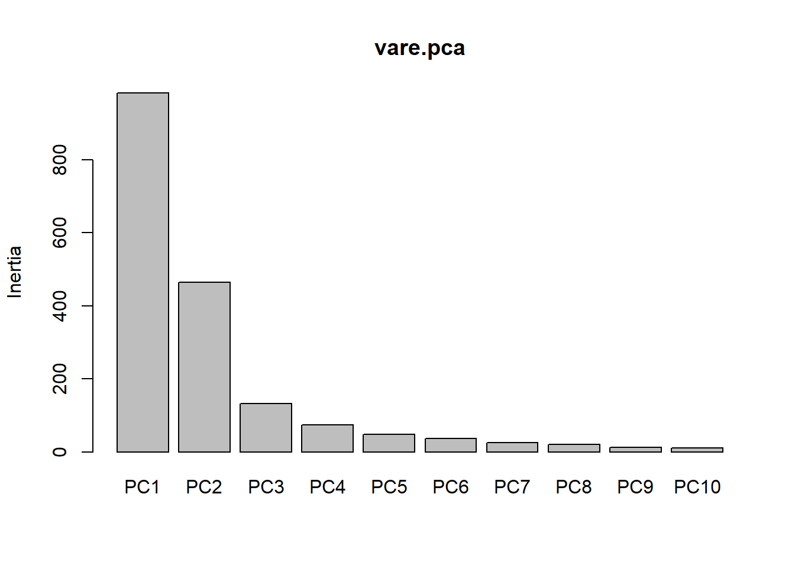
These plots are usually not published, but it is a good representation of the variance explained by each principal component.
We can extract the eigenvalues using:
vare.pca$CA$eig PC1 PC2 PC3 PC4 PC5 PC6
9.829788e+02 4.643040e+02 1.322505e+02 7.393366e+01 4.841829e+01 3.700937e+01
PC7 PC8 PC9 PC10 PC11 PC12
2.572624e+01 1.970557e+01 1.227419e+01 1.043536e+01 9.350783e+00 2.798400e+00
PC13 PC14 PC15 PC16 PC17 PC18
2.327555e+00 1.391718e+00 1.205730e+00 8.147513e-01 3.312842e-01 1.866564e-01
PC19 PC20 PC21 PC22 PC23
1.065203e-01 6.362191e-02 2.520579e-02 1.651804e-02 4.590018e-03
ImportantAssignment question 3
Using the Eigenvalues:
1- Estimate the variance explained by the first and second principal components. Essentially, eigenvalue 1 + eigenvalue 2 divided by the sum of all eigenvalues.
2- Replicate one of the screeplots but instead of the eigenvalues, use the proportion of variance explained. A barplot or line plot, but you should estimate proportion, and plot it :)
Let’s plot the sites in a two-dimensional space (using PC1 and PC2):
plot(vare.pca, display="sites")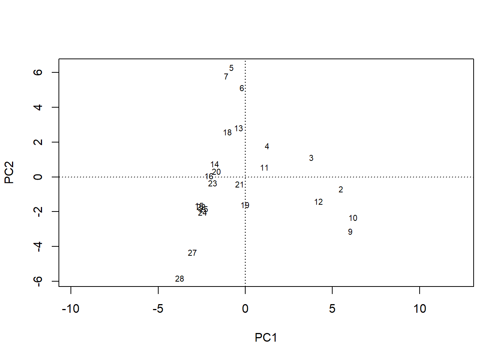
This is showing us, which sites have biological communities that are closer to each other.
ImportantAssignment question 4
Look at the PCA plot. Focus on some sites that are close to each other (e.g., 27 and 28, 10 and 9) and some sites that are pretty far apart (e.g. 5 and 10).
Choose two pairs of sites that are close to each other and two pairs of sites that are far away from each other.
Look at those same sites in the proportion stacked barchart that we plotted earlier in this assignment and answer: do you think the similarity of site composition is being represented by the “closeness” in the PCA plot?
You can also plot the species:
plot(vare.pca, display="species")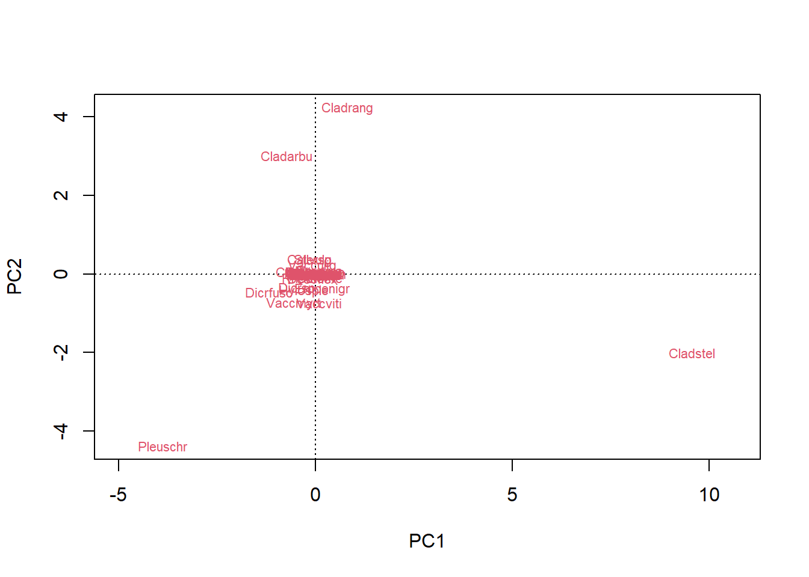
This shows species that tend to occupy similar sites
Or both:
plot(vare.pca)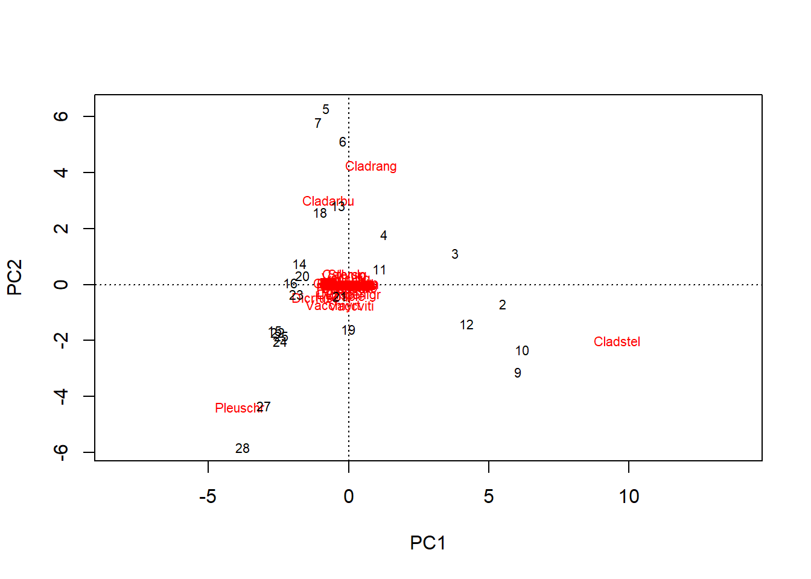
However, the prebuilt plots are in my mind, a bit ugly. If you will be working with multivariate data, I recommend you spend some time to make sure your plots are nice and easy to interpret!
10.2 Alternatives to vegan PCA
In general, the vegan package is the most popular package to analyze multivariate data in R.
Partially because it includes everything you need to run your analyses, while using other packages might require you to load different packages for different portions of the analysis.
There are many packages that can estimate PCA’s though.
We can use a baseR command: prcomp1
vara.pca2<-prcomp(varespec)
summary(vara.pca2)Importance of components:
PC1 PC2 PC3 PC4 PC5 PC6 PC7
Standard deviation 31.3525 21.5477 11.50002 8.5985 6.95833 6.08353 5.07210
Proportion of Variance 0.5384 0.2543 0.07244 0.0405 0.02652 0.02027 0.01409
Cumulative Proportion 0.5384 0.7927 0.86519 0.9057 0.93220 0.95247 0.96657
PC8 PC9 PC10 PC11 PC12 PC13 PC14
Standard deviation 4.43910 3.50345 3.23038 3.05791 1.67284 1.52563 1.17971
Proportion of Variance 0.01079 0.00672 0.00572 0.00512 0.00153 0.00127 0.00076
Cumulative Proportion 0.97736 0.98408 0.98980 0.99492 0.99645 0.99773 0.99849
PC15 PC16 PC17 PC18 PC19 PC20 PC21
Standard deviation 1.09806 0.90264 0.57557 0.4320 0.32637 0.25223 0.15876
Proportion of Variance 0.00066 0.00045 0.00018 0.0001 0.00006 0.00003 0.00001
Cumulative Proportion 0.99915 0.99960 0.99978 0.9999 0.99994 0.99997 0.99999
PC22 PC23 PC24
Standard deviation 0.12852 0.06775 4.947e-16
Proportion of Variance 0.00001 0.00000 0.000e+00
Cumulative Proportion 1.00000 1.00000 1.000e+00And we can get the eigenvalues like this:
library(factoextra)Welcome to factoextra!Want to learn more? See two factoextra-related books at https://www.datanovia.com/library/principal-component-methodseig.val<-get_eigenvalue(vara.pca2)
kableExtra::kable(eig.val) #You can ignore the kable command, I just use it to make nice looking graphs| eigenvalue | variance.percent | cumulative.variance.percent | |
|---|---|---|---|
| Dim.1 | 982.9788212 | 53.8423990 | 53.84240 |
| Dim.2 | 464.3040322 | 25.4321278 | 79.27453 |
| Dim.3 | 132.2505216 | 7.2439865 | 86.51851 |
| Dim.4 | 73.9336647 | 4.0496965 | 90.56821 |
| Dim.5 | 48.4182882 | 2.6520986 | 93.22031 |
| Dim.6 | 37.0093736 | 2.0271784 | 95.24749 |
| Dim.7 | 25.7262427 | 1.4091480 | 96.65663 |
| Dim.8 | 19.7055738 | 1.0793675 | 97.73600 |
| Dim.9 | 12.2741909 | 0.6723155 | 98.40832 |
| Dim.10 | 10.4353609 | 0.5715941 | 98.97991 |
| Dim.11 | 9.3507831 | 0.5121866 | 99.49210 |
| Dim.12 | 2.7984005 | 0.1532816 | 99.64538 |
| Dim.13 | 2.3275552 | 0.1274912 | 99.77287 |
| Dim.14 | 1.3917180 | 0.0762310 | 99.84910 |
| Dim.15 | 1.2057303 | 0.0660436 | 99.91515 |
| Dim.16 | 0.8147513 | 0.0446278 | 99.95977 |
| Dim.17 | 0.3312842 | 0.0181460 | 99.97792 |
| Dim.18 | 0.1866564 | 0.0102241 | 99.98814 |
| Dim.19 | 0.1065203 | 0.0058346 | 99.99398 |
| Dim.20 | 0.0636219 | 0.0034849 | 99.99746 |
| Dim.21 | 0.0252058 | 0.0013806 | 99.99884 |
| Dim.22 | 0.0165180 | 0.0009048 | 99.99975 |
| Dim.23 | 0.0045900 | 0.0002514 | 100.00000 |
| Dim.24 | 0.0000000 | 0.0000000 | 100.00000 |
And the fviz_eig function from the factoextra package gives us nicer looking scree plots.
fviz_eig(vara.pca2, col.var="blue")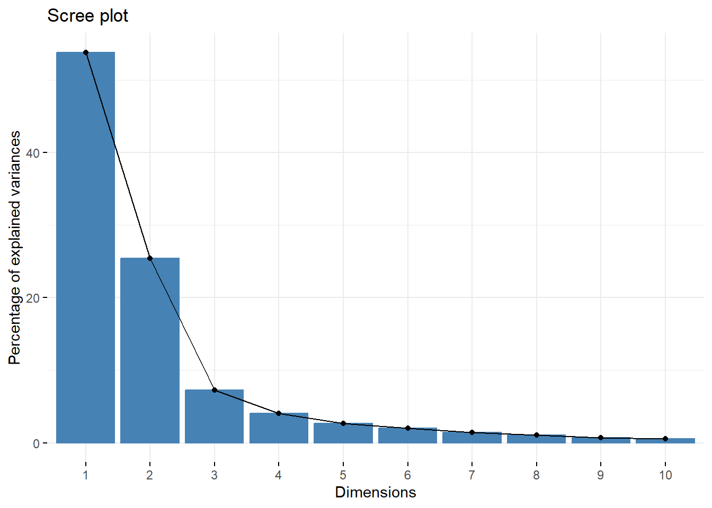
And because these plots use ggplot2 they are very easy to modify:
a<-fviz_eig(vara.pca2, col.var="blue")
a + theme_classic() +
theme(plot.title = element_text(hjust = 0.5))Using this same package we can estimate and plot the square cosine (cos2) which corresponds to the quality of representation of variables. Essentially, how well each variable is represented by each PC. We do it this way:
fviz_cos2(vara.pca2, choice = "var", axes = 1:2)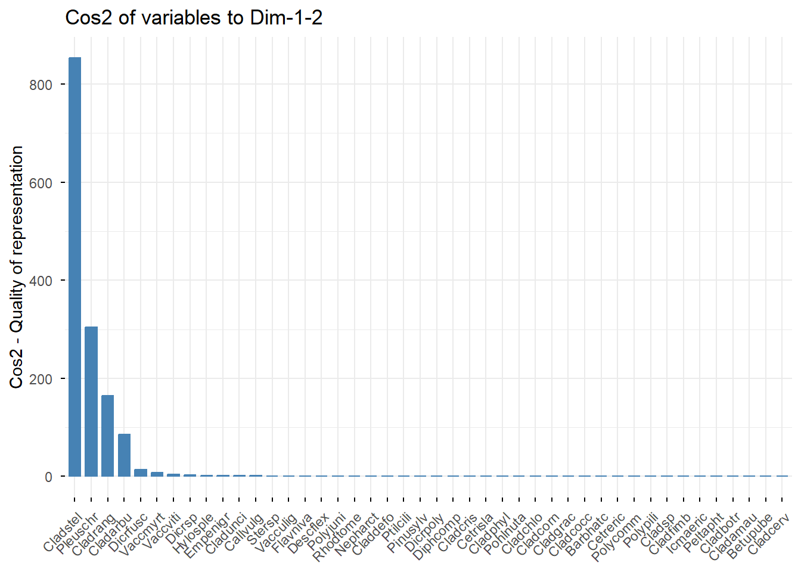
Wow! Essentially 4 species are the drivers of composition in this case! This is hard to read. Let’s repeat it with less variables:
fviz_cos2(vara.pca2, choice = "var", axes = 1:2, top=10)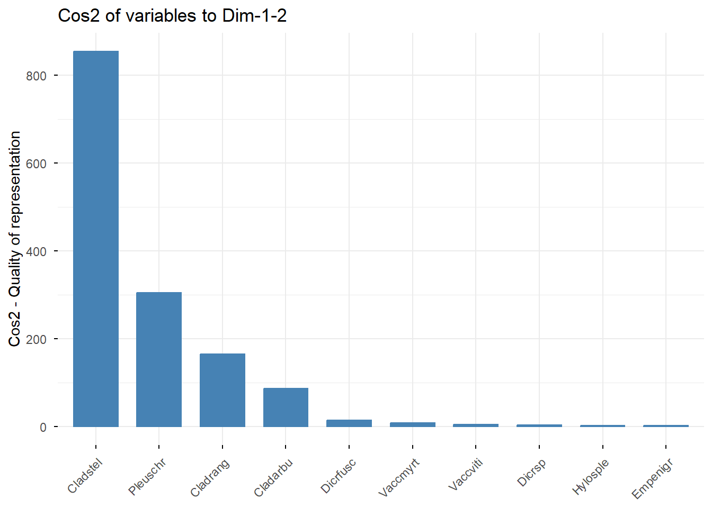
Way better! And we don’t really lose any information
We can actually look at this for dim1 and dim2 independently:
a<-fviz_contrib(vara.pca2, choice = "var", top=10, axes = 1)
# Contributions of variables to PC2
b<-fviz_contrib(vara.pca2, choice = "var", top=10, axes = 2)
library(gridExtra)
Attaching package: 'gridExtra'The following object is masked from 'package:dplyr':
combinegrid.arrange(a,b, ncol=2, top='Contribution of the variables to the first two PCs')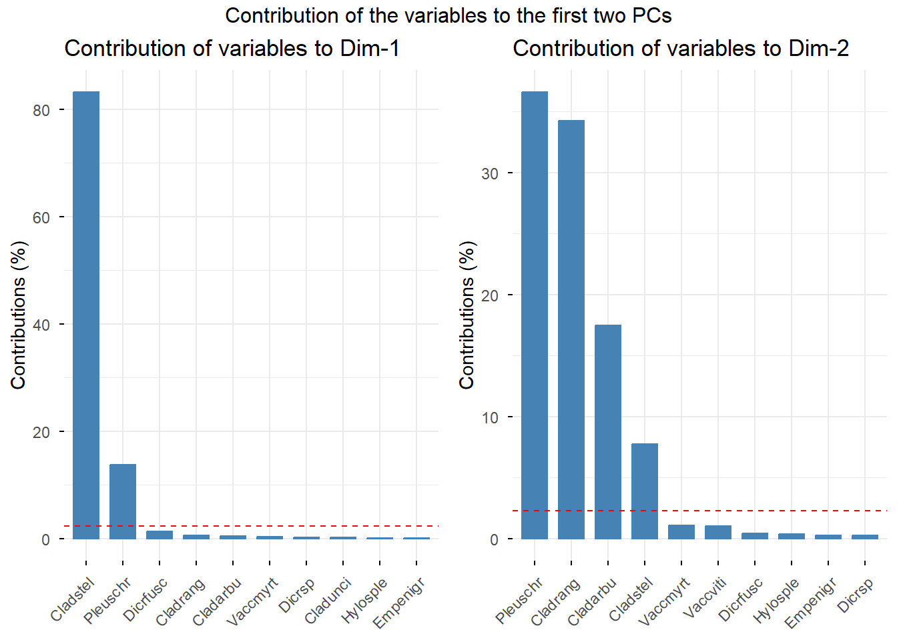
Usually, a corrplot is a great visual representation, but in this case it is not. We have 44 species and 24 dimensions, which makes the corrplot unusable:
var <- get_pca_var(vara.pca2)
library("corrplot")corrplot 0.95 loadedcorrplot(var$cos2, is.corr=FALSE)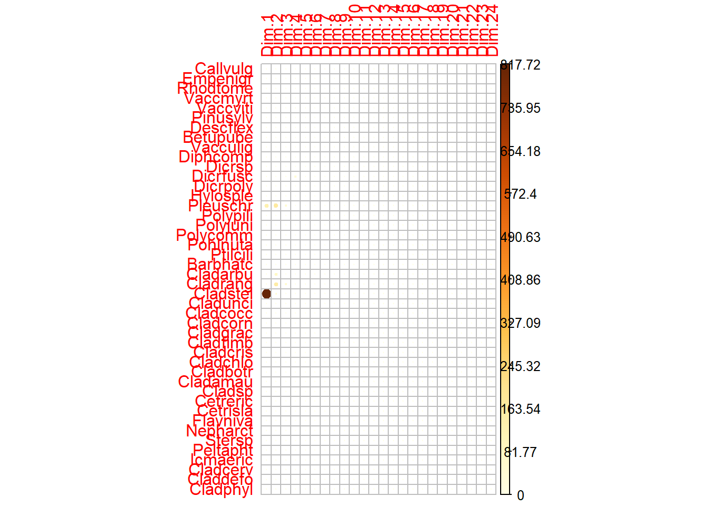
I am leaving the code because it might be a great analysis if you have less dimensions and less variables!
Finally, we will draw a factor map. Positively correlated variables are grouped together, whereas negatively correlated variables are positioned on opposite sides of the plot origin. The distance between variables and the origin measures the quality of the variables on the factor map. Variables that are away from the origin are well represented on the factor map.
fviz_pca_var(vara.pca2,
col.var = "cos2", # Color by the quality of representation
gradient.cols = c("darkorchid4", "gold", "darkorange"),
repel = TRUE
)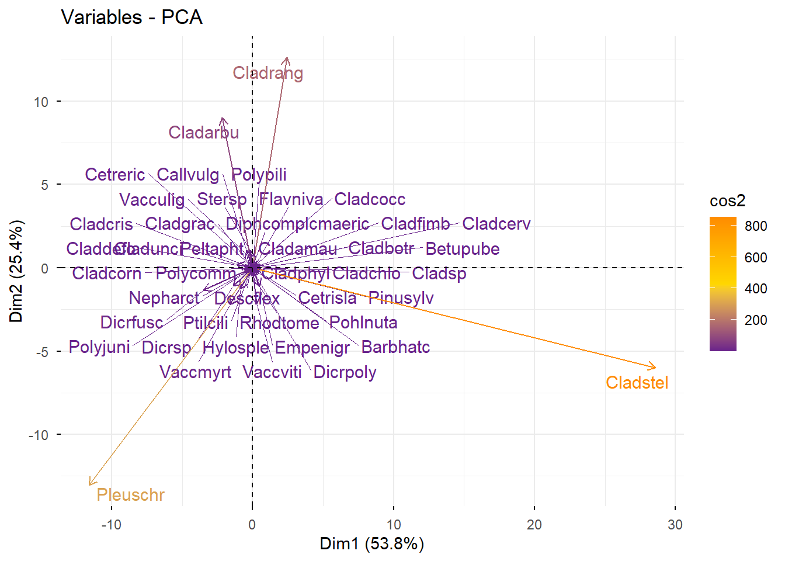
Again, we see the 4 species that end up driving the effects. and they are in different quadrants.
ImportantAssignment question 5
Try to interpret the last plot. As if you were describing the importance of the results in a paper.
Let’s now look at the site response
10.2.1 Site response
We can do the same exact analyses at the site level:
site <- get_pca_ind(vara.pca2)
fviz_pca_ind(vara.pca2,
col.ind = "cos2", # Color by the quality of representation
gradient.cols = c("darkorchid4", "gold", "darkorange"),
repel = TRUE
)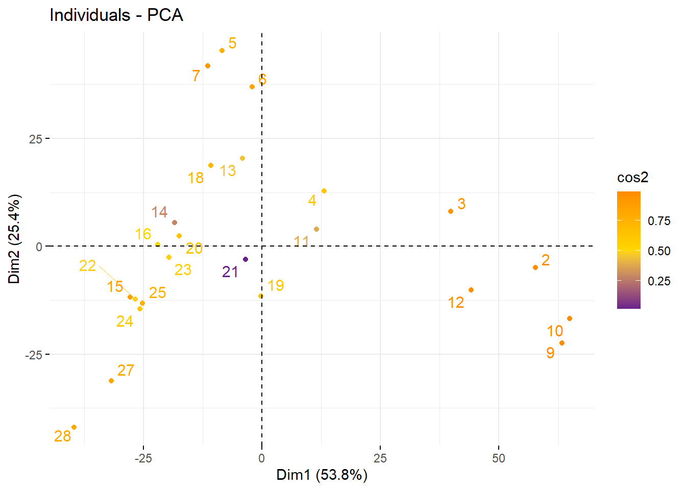
fviz_contrib(vara.pca2, choice = "ind", axes = 1:2)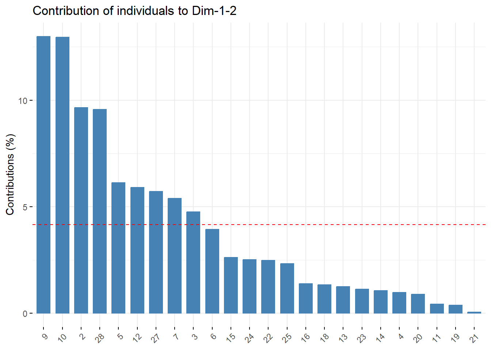
Woah! Why do you think site 9 and 10 contribute more to dimensions 1 and 2?
Finally, we can do the following plot showing both sites and species:
We need the package ggfortify
library(ggfortify)
autoplot(vara.pca2, loadings=TRUE, loadings.colour='darkorchid4', loadings.label=TRUE, loadings.label.size=3)+
theme_classic()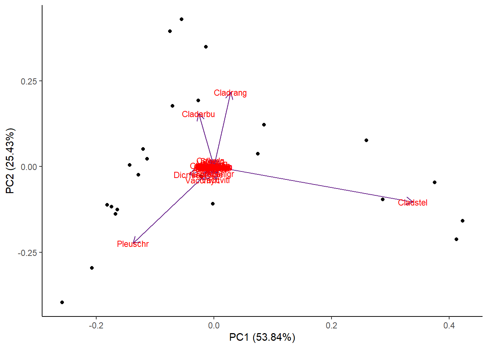
Nice! We are done with PCAs!
There are tons of resources online if you will be working with PCA’s. I do recommend reading the vegan documentation. I also recommend you read the following:
https://vegandevs.r-universe.dev/vegan/doc/diversity-vegan.pdf
https://vegandevs.r-universe.dev/vegan/doc/decision-vegan.pdf
Even if not working with this package directly
10.3 NMDS
Let’s run a quick NMDS with the same dataset. Again, reading the vegan documentation is important in order to fully understand this. Here, I have decided to keep it very brief.
To run an NMDS in vegan we do the following:
NMDS1<-metaMDS(varespec,distance = "bray")Square root transformation
Wisconsin double standardization
Run 0 stress 0.1843196
Run 1 stress 0.2124988
Run 2 stress 0.1825658
... New best solution
... Procrustes: rmse 0.04161691 max resid 0.1517584
Run 3 stress 0.2079057
Run 4 stress 0.1955836
Run 5 stress 0.2633213
Run 6 stress 0.18458
Run 7 stress 0.1969805
Run 8 stress 0.2300385
Run 9 stress 0.1852397
Run 10 stress 0.2411342
Run 11 stress 0.2152639
Run 12 stress 0.1852397
Run 13 stress 0.1948413
Run 14 stress 0.1825658
... New best solution
... Procrustes: rmse 1.141387e-05 max resid 3.522426e-05
... Similar to previous best
Run 15 stress 0.1948413
Run 16 stress 0.2114458
Run 17 stress 0.2080758
Run 18 stress 0.2088293
Run 19 stress 0.2105413
Run 20 stress 0.2127526
*** Best solution repeated 1 timesNMDS1
Call:
metaMDS(comm = varespec, distance = "bray")
global Multidimensional Scaling using monoMDS
Data: wisconsin(sqrt(varespec))
Distance: bray
Dimensions: 2
Stress: 0.1825658
Stress type 1, weak ties
Best solution was repeated 1 time in 20 tries
The best solution was from try 14 (random start)
Scaling: centring, PC rotation, halfchange scaling
Species: expanded scores based on 'wisconsin(sqrt(varespec))' Maybe the most important value here is the stress value. We had a 0.18 value, which vegan labels as “weak ties”. For NMDS, stress is a measure of the goodness of fit, and we use the following values to make a decision on the fit:
| stress value | Goodness of fit |
|---|---|
| >0.2 | Not good. Use a different method. |
| <0.2 & >0.1 | OK. But ties are weak |
| <0.1 & >0.05 | Great |
| <0.05 | Excellent |
We can also obtain a stressplot:
stressplot(NMDS1)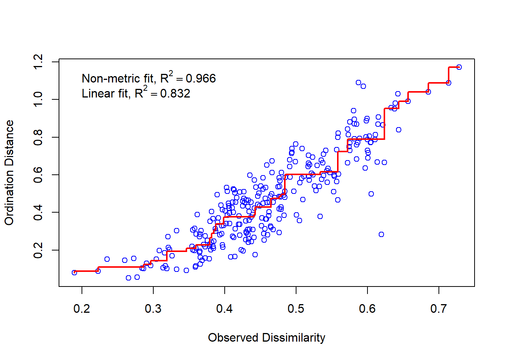
In NMDS linearity is not assumed (in PCA it is!) However monotonicity is. This is a monotonic plot, as it only move up in the y axis as x increases, however it is not linear. This plot shows the relationship between the observed dissimilarity, and the ordination distance., We want this plot to have a high \(R^2\) (think of it as comparison of observed and predicted, or observed and calculated).
If you are wondering how stress is calculated, it is calculated using the following equation:
\[ R^2 = 1-S^2 \]
where \(R^2\) is the non-metric fit \(R^2\) while \(S^2\) is stress squared.
Let’s plot the NMDS! First let’s plot the sites:
ordiplot(NMDS1,type="n")
orditorp(NMDS1, display = "sites", cex = 1.1, air = 0.01)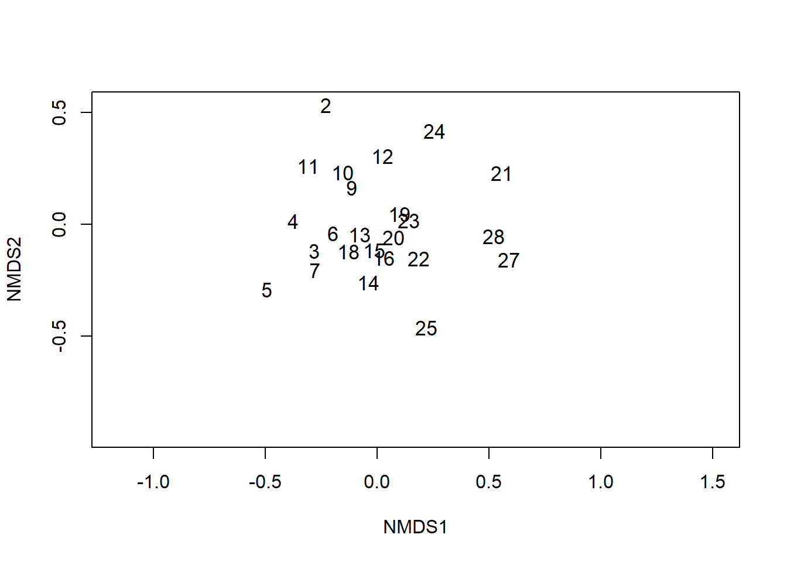
ImportantAssignment question 6
Look at the NMDS plot and answer: How different are your NMDS results from the PCA ones?
Finally, let’s plot the species and then both plots
ordiplot(NMDS1,type="n")
orditorp(NMDS1, display = "species", cex = 0.5, air = 0.01,col="red")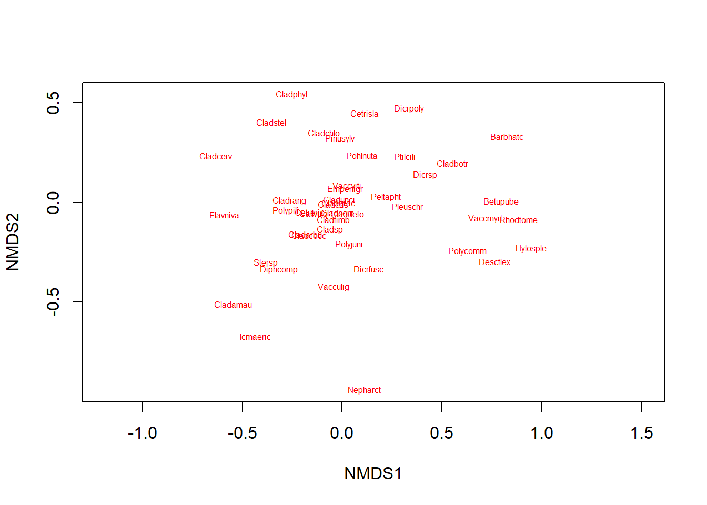
plot(NMDS1, type = "t")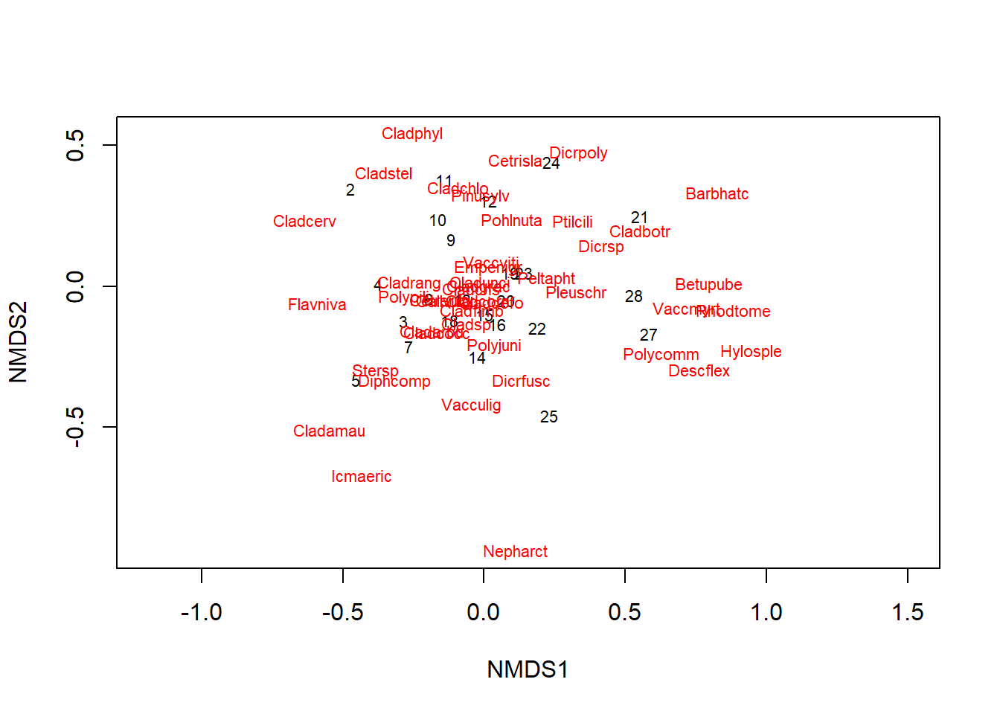
Cool! I am happy to talk more about multivariate methods and about these analyses on a one to one basis if needed, but this is the end of this (your last!) assignment.